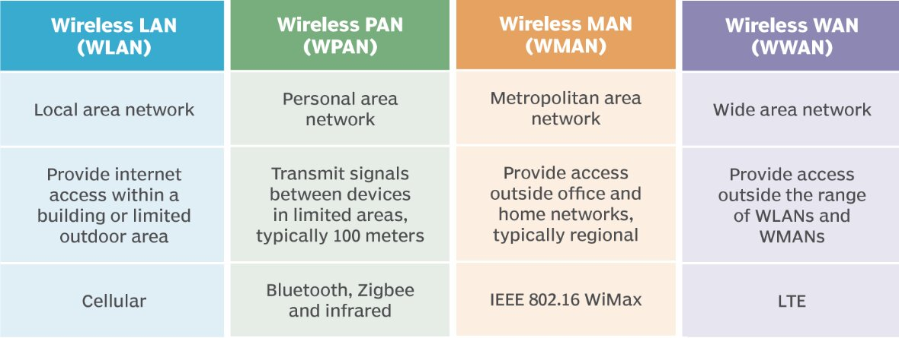
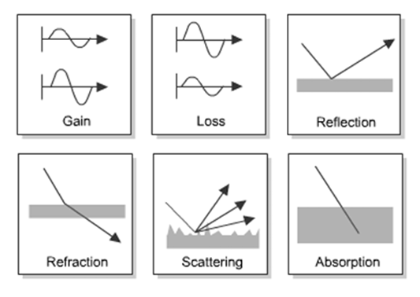

Wireless Communication
IN 3510 | Lecture 2 Comprehensive Notes
1. Types of Wireless Technologies
| Category | Range | Examples |
|---|---|---|
| Proximity | 0 - 10 cm | NFC, RFID |
| WPAN (Personal) | 10 - 100 m | Bluetooth LE, ZigBee, Thread |
| WLAN (Local) | 100 - 1000 m | 802.11 a/b/g/n/ac (Wi-Fi) |
| WNAN (Neighborhood) | ~5 - 10 km | Wi-SUN, ZigBee-NAN |
| WWAN (Wide) | Up to 100 km | Cellular (2G-5G), LTE-MTC |
| LPWAN (Low Power) | Long Range | SIGFOX, LoRa |
2. Elements of a Wireless Network

Network Elements
-
Wireless Hosts End devices (Laptops, PDAs, Phones). May be mobile or stationary.
-
Base Station Relay connected to wired network. Responsible for sending packets to hosts in its "area" (e.g., Cell towers, Access Points).
-
Wireless Link Connects mobile to base station. Characterized by various data rates and transmission distances.
Network Modes
Base station connects mobiles into the wired network. Includes Handoff (mobile changes base station).
No base stations. Nodes transmit only to others within range. Nodes organize themselves into a network.
3. Link Characteristics & Propagation
Decreased Signal Strength (Path Loss)
As a radio signal travels through space or materials, its strength becomes weaker.
- Signal loses power the farther it travels.
- Walls, buildings, trees, and other obstacles absorb or block part of the signal.
- Higher frequency signals lose strength faster than lower frequencies.
Multipath Fading
The same signal reaches the receiver through multiple paths (reflections from buildings, walls, ground etc.).
- Some paths arrive in phase → signals add up → stronger signal (constructive interference)
- Some paths arrive out of phase → signals cancel each other → weaker signal (destructive interference)
- Causes sudden fluctuations in signal quality, even when the user is stationary.
Interference
Unwanted radio signals from other users, other cells, or external sources (e.g.,microwaves) affect the intended communication.
- Different Users in the Same Cell: When many users share the same frequency/time resources, they can interfere with each other.
- Users in Different Cells: Signals from neighboring cells can overlap.
- External Interference (Unlicensed Bands): Comes from devices like Wi-Fi routers, Bluetooth devices, microwave ovens, cordless phones, etc.
Radio Propagation Mechanisms
radio waves are generated by an antenna and they propagate in all directions as a straight line
- Reflection: Bouncing off large objects.
- Refraction: Bending as it passes through mediums.
- Scattering: Hitting small objects/rough surfaces.
- Absorption: Signal energy absorbed by material.
Key Link Parameters
- Carrier Frequency:
900MHz/1.9GHz (Cellular), 2.4/5.3GHz (Wi-Fi). - Bandwidth:
200kHz (GSM) vs 83.5MHz (802.11b). - Data Rate:
e.g., 11 Mbps (802.11b). - Range
4. Modulation
"Adding information (e.g., voice) to a carrier electromagnetic (radio) signal."
Modulating Wave: The information signal.
Carrier Wave: The high-frequency transport signal.
5. Bluetooth Technology
Overview
- What?:Exchanging data over short distances using short-wavelength from fixed and mobile devices
- Purpose: Cable replacement technology (Connect devices such as Handsets, peripherals).
- Standard: Industry standard for WPANs.
- Spectrum: ISM Band (2400-2480 MHz).
- Founders: Ericsson, IBM, Intel, Nokia, Toshiba (1998).
Key Features
- Creating personal area networks(PANs) with high levels of security
- Low power & low cost (Single chip radio).
- Short range (~10 meters).
- Data rate: ~1 Mbps.
- Relatively fast, short packets
- Piconet: Ad-hoc network of up to 8 devices.
Common Applications
Data Synchronization
Cordless Headsets
Peripherals